The Computational Biology Lab (LBC) focuses on the comparative and functional genomics of pathogens. Within these general areas of work, we maintain lines of research that seek to understand the genetic basis of complex phenotypes in bacteria, the evolution of multigene families in worms, and the development of tools for the application of massive sequencing.
Our Research
Evolution of families of secretory proteins coding genes in Platyhelminthes
Parasitic flatworms generally have complex cycles involving various hosts, including humans and livestock species, and therefore have a great impact on human and animal health. Examples of species of this group of relevance are Echinococcus granulosus, Schistosoma mansoni, and Fasciola hepatica, among many others. These organisms have been studied in all aspects of their biology, but in relative terms of its impact, there is still much to do. Genomic and computational approaches have played a key role in keeping investigation moving at a low cost. Currently, there are genomes of several species that are available and there is also information on gene expression level. The study of genomes confirmed that duplication is a powerful evolutionary mechanism, generating raw material for the acquisition of new functions in the cell. In many cases, the increase of copies in a family of genes has proven to be the result of an adaptive process. Previous results suggest an important role of natural selection in the evolution of complex cycles in many flatworms and especially in some genes coding for excreted proteins. Through a comparative and functional genomic approach, this project aims to identify genes and families involved in the adaptive process at different stages of the cycle of different species to their specific niches (including aspects related to intermediate and final hosts) and quantify the effect of selection natural operating at the sequence level and the process of duplication in different lineages of flatworms.
Comparative genomics of small non-coding RNAs in Salmonella enterica.
Salmonella enterica, a pathogen of birds and mammals, is distributed worldwide and has a considerable impact on human and animal health, being the main causal agent of foodborne infections. The different serotypes within the species show important differences in epidemic potential, virulence, and pathogenicity. The genetic bases of these differences are not fully understood, probably because they are the result of a combination of multiple genetic changes that have occurred throughout evolution. Small non-coding RNAs (sRNAs) are a class of gene expression regulators, conserved in bacteria, with less than 500 nucleotides in length. These elements primarily act as antisense RNAs on multiple target messenger RNAs and affect its translation process and/or stability. The development of massive sequencing and genomic strategies have made it possible to appreciate the role of these elements, involved in response to stress, regulation of metabolism, regulation of horizontal transfer, control of envelope composition, virulence in pathogens, among others. Despite its relevant role, few studies have exclusively addressed the comparative study of sRNAs and their network of regulated target mRNAs in S. enterica. This project proposes to study the evolution and variability of sRNAs and target mRNA within and between serotypes.